AI 每日新聞彙整
全部主題
其他
5 家媒體報導geminiargongoogle
Gemini 4 Argon for Robotics
- Simon Willison llm-gemini 0.35
- Google DeepMind Developing Gemini 4 Argon responsibly and safely
- Hacker News (100+) Gemini 4 Argon
- Google DeepMind Gemini 4 Argon for Robotics
- Google DeepMind Gemini 4 Argon: Built to solve your hardest problems
- Ars Technica AI Gemini 4 Argon begins rolling out in Gemini app and Antigravity, but only if you pay
- The Verge AI Google finally releases Gemini 4 Argon
4 家媒體報導appsgooglepersonal
Google Play now lets anyone build private, vibe-coded apps that run on Android
Google is making it easier to build and use personal Android apps created with AI, without having to make them available to everyone on the Play Store.
- Ars Technica AI Google wants to host your personal vibe-coded apps in the Play Store
- TechCrunch AI Google Play now lets anyone build private, vibe-coded apps that run on Android
- The Verge AI Google makes it easier to launch your vibe-coded apps
- ZDNet AI Google lets you make personal Android apps for free now – with just prompts
- TechCrunch AI SpaceX and Google both said no. Now his software is riding a SpaceX rocket next to Google’s
3 家媒體報導roomopenaiarrested
OpenAI employee arrested for allegedly planting a bug in a conference room
An OpenAI engineer was arrested after the company said it discovered a "sophisticated recording device" hidden in one of its offices. The employee was identified as Abdulrahman Alfozan, a 35-year-old Saudi national. Alfozan is charged with using or endeavoring to use a device to
3 家媒體報導grokxaicursor
X 推出整合 Grok、Cursor 與 X Premium 的訂閱方案，月費 8 美元起
X 推出整合 Grok、Grok Bot、Cursor 與 X Premium 的 The X Subscription，分 Free、Plus、Premium、Super、Ultra 五級，共用一個 AI 用量池，Plus 月費 8 美元起。
3 家媒體報導wondermusemeta
Meta推出前沿AI模型Muse Wonder，挑戰OpenAI與Anthropic
Meta周一（10/12）推出新一代前沿AI模型Muse Wonder與Muse Wonder Full，主攻個人與專業AI代理人任務，強化複雜推理、程式開發及長時間任務執行能力。Meta表示，這是該公司迄今能力最強的模型，足以與全球頂尖AI模型競爭。
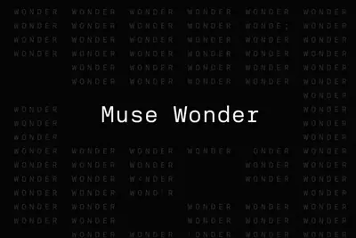
2 家媒體報導lineagent
從聊天到購物全面融入AI Agent Line在台15年釋出AI新戰略
Line在台灣深耕今年邁入第15年，而10月13日Line台灣也透過年度記者會宣布下一階段在台布局。其中，最大亮點是全面圍繞在以AI為核心的服務升級，同時也宣告Line旗下各...
- DIGITIMES 從聊天到購物全面融入AI Agent Line在台15年釋出AI新戰略
- 科技新報 TechNews AI Agent 進入 LINE 聊天室，訂閱會員獲六項進階功能
2 家媒體報導rtxsparknvidia
All Systems Go: Global PC App Ecosystem Ready for NVIDIA RTX Spark
NVIDIA RTX Spark is a new beginning for the PC — a reinvention combining the capabilities of a gaming PC, a creative studio and a personal AI supercomputer into a single superchip. With up to 128GB of unified memory and 1 petaflop of AI compute, RTX Spark delivers the full stack
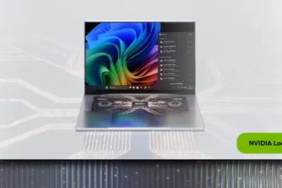
- 科技新報 TechNews RTX Spark 開賣在即，但要賣給誰？
- NVIDIA Blog All Systems Go: Global PC App Ecosystem Ready for NVIDIA RTX Spark
2 家媒體報導algorithmfacebookfeature
Facebook is giving users more control over their algorithm
Meta announced the launch of its new AI-powered feature, “Your Algorithm,” a feature it first launched on Instagram.
2 家媒體報導applesirichip
苹果新款 Apple TV 4K 发布：2399 港元，A19 芯片、Siri AI、内置麦克风
IT之家 10 月 13 日消息，苹果新款 Apple TV 4K 今日正式发布。该产品将于 11 月 13 日起正式发售， 售价 2,399 港元 （IT之家注：现汇率约合 2,050 元人民币） 。 据官方介绍，Apple TV 4K 支持杜比视界和 HDR10+，可呈现生动逼真的 4K 画面，让每一个细节都栩栩如生。该机支持空间音频和杜比全景声功能，营造宛如四面八方而来的环绕立体声。 规格方面，Apple TV 4K 搭载 A19 芯片，CPU 性能相比上一代提升 50%，GPU 性能提升最高 2 倍，带来更快的响应速度和流畅播放体验。当然最重要的
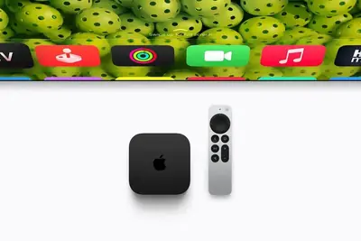
samsunghuaweidigitimes
DIGITIMES Today：三星OCP 2026射出AI記憶體三箭 | 中國本土AI晶片拚三大方向升級 | Grab承諾在台不用華為地圖
早安。
nvidiaaeternz
京元電美國廠攜手NVIDIA大布局！ 傳落腳德州沃斯堡
半導體測試大廠京元電宣布與NVIDIA簽訂預付款協議，支持美國全資子公司AeternZ於當地建置產能，同時給予NVIDIA保障，提前綁定在美AI晶片測試產能，也讓京元電赴美...
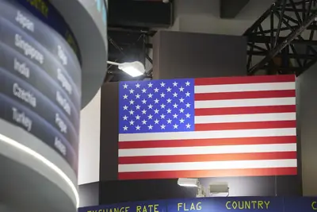
- DIGITIMES 京元電美國廠攜手NVIDIA大布局！ 傳落腳德州沃斯堡
hbmasic
記憶體產能瓶頸難解 HBM降規轉向8層滲透率提升
記憶體供需缺口緊俏，為了因應AI需求噴發帶來產能瓶頸，供應鏈人士指出， GPU與客製化特用晶片（ASIC）在次世代架構中，擬改採高頻寬記憶體（HBM）降規方案，受限...
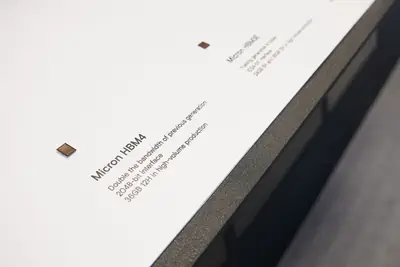
- DIGITIMES 記憶體產能瓶頸難解 HBM降規轉向8層滲透率提升
semidatacenter2028
封裝尺寸放大快又急 SEMI估「玻璃基板」提前2028年進入市場
AI與資料中心晶片封裝尺寸快速放大，正推動玻璃基板導入時程提前，SEMI技術聯盟副總裁Beth Keser表示，2年前她預估玻璃基板要到2030年前後才會影響市場，但「封裝尺...
- DIGITIMES 封裝尺寸放大快又急 SEMI估「玻璃基板」提前2028年進入市場
ceoapplieddickerson
AI晶片掀技術與產能競賽 應材CEO拋「創新三方向」支援
AI運算需求快速擴大，半導體業面臨技術與產能激烈賽局。應用材料（Applied Materials）總裁暨執行長Gary Dickerson指出，AI產業競爭一方面是提高每瓦運算...
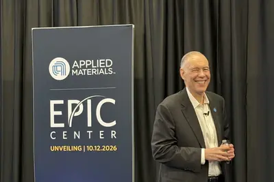
- DIGITIMES AI晶片掀技術與產能競賽 應材CEO拋「創新三方向」支援
u.s.army
美軍沙漠演習暴露AI作戰瓶頸 無人機過熱、通訊失靈考驗軍事現代化
美國陸軍（U.S. Army）正積極推動人工智慧（AI）、無人機及新興國防科技導入作戰體系，但先進技術從實驗測試走向實際部署，仍面臨環境適應與系統整合等挑戰。...
- DIGITIMES 美軍沙漠演習暴露AI作戰瓶頸 無人機過熱、通訊失靈考驗軍事現代化
rubinhbm4hbm
NVIDIA HBM4堆疊層數調整？ 市調機構估Rubin仍以12層為主
外界傳出NVIDIA將減少新一代人工智慧（AI）加速器的高頻寬記憶體（HBM）堆疊層數，市場擔憂記憶體價格走跌。市調機構Counterpoint Research查核後指出，記憶體需...
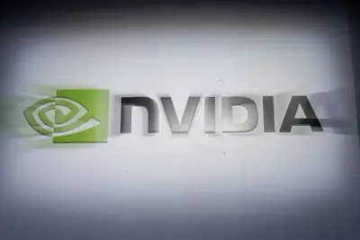
- DIGITIMES NVIDIA HBM4堆疊層數調整？ 市調機構估Rubin仍以12層為主
usfpnvidiacisco
思科攜NVIDIA布局高速光互連 USFP頻寬密度提高至4倍
思科（Cisco）與NVIDIA在OCP Global Summit 2026宣布合作開發每通道400 Gb/s的超高密度小形可插拔光模組（Ultra-Dense Small Form Factor Pluggable；USFP...
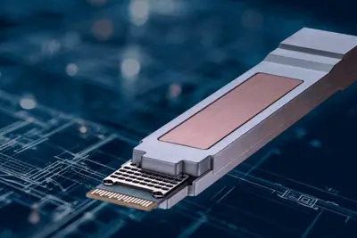
- DIGITIMES 思科攜NVIDIA布局高速光互連 USFP頻寬密度提高至4倍
firmusiponvidia
認購需求不如預期 Firmus澳洲IPO告吹
獲NVIDIA投資的澳洲「雲端新勢力」Firmus原訂在澳洲的上市計畫已經告吹，令外界推測，投資者對人工智慧（AI）的態度變得更加謹慎。
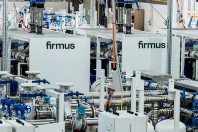
- DIGITIMES 認購需求不如預期 Firmus澳洲IPO告吹
ddr4ddr5hbm
HBM擴產排擠舊規格產能 DDR4合約價漲幅反超DDR5
新規格DDR5上市後，舊規格DDR4的價格漲幅卻反超DDR5。人工智慧（AI）熱潮帶動高頻寬記憶體（HBM）擴產，記憶體業者縮減舊規格DRAM產線，進而推升DDR4合約價...
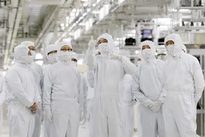
- DIGITIMES HBM擴產排擠舊規格產能 DDR4合約價漲幅反超DDR5
openai
苹果诉 OpenAI 窃取商业秘密案新进展：法院准许苹果调取后者招聘材料
IT之家 10 月 14 日消息，一名法官裁定，在苹果公司于 7 月针对 OpenAI 提起的商业秘密诉讼中，苹果可以快速调阅 OpenAI 的招聘相关材料。 具体而言，法院准许苹果查阅相关文件，这些文件与 OpenAI 面试前苹果员工的记录有关。这批求职者应聘的是 OpenAI 消费硬件与机器人部门岗位，相关招聘发生在传闻中 OpenAI 首款硬件设备发布之前。 文件内容可能包含面试清单、指引、说明、手册、面试脚本，还有技术演示材料以及记录，这些记录能证明面试讨论中提及苹果的技术或零部件。 法院认定这批文件应当优先调取，要求 OpenAI 在五天内移交

higgsfieldgpt-6astra
AI 长视频时代来临：OpenAI GPT-6 Astra 助力生成时长从 1 分钟提升到 10 分钟
IT之家 10 月 14 日消息，OpenAI 公司今天（10 月 14 日）发布公告，宣布和 AI 视频生成平台 Higgsfield 达成最新合作进展。在接入 GPT-6 Astra 后，Higgsfield 支持生成的 AI 视频时长上限从 1 分钟提升到 10 分钟。 IT之家附上官方介绍视频如下： GPT-6 Astra 支持创意智能体调用外部工具，处理 3D 建模等复杂工作。Higgsfield 表示，该能力用于维持长视频在角色、场景和视觉细节上的一致性，是长视频生成的关键难点。 Higgsfield 已将相关流程用于其 YouTube 频道
store
谷歌 Play Store 新功能：用户用 AI 搓的 App 不用上架商店，可仅限自己使用
IT之家 10 月 14 日消息，谷歌于当地时间周二宣布，用户通过氛围编码（vibe-coded）制作的应用，如今可以直接在安卓智能手机上运行，无需先在谷歌应用商店（Google Play Store）公开发布。一项新功能支持用户使用普通谷歌账号，借助谷歌应用商店在设备上启动属于自己的个人应用，且应用将完全保持私密。 这类个人应用不会出现在谷歌应用商店的搜索结果或应用列表页面，除创建者本人外，不会分享给任何人。 推出该功能的背景是，越来越多人尝试借助人工智能搭建满足自身特定需求的应用。但在此之前，如果想要在自己的安卓设备上使用这类应用，就必须上架谷歌应用
xboxlabswebgpu
AI 重新编译、修改游戏获夏尔马“点赞”，微软成立 XBOX Labs 新团队
IT之家 10 月 14 日消息，随着 AI 辅助游戏修改和重新编译技术迅速兴起，微软成立了 XBOX Labs 团队，探索新技术在游戏开发中的应用。 最近几周，越来越多 Mod 制作者利用 Claude 最新的 Opus 5.5 模型，将不同游戏的内容混合在一起，例如让马力欧在《艾尔登法环》中体验平台跳跃玩法，甚至将《使命召唤》移植到网页浏览器中运行。 据外媒 VGC 报道，当地时间 13 日，XBOX CEO 阿莎 · 夏尔马在致员工的内部信中指出，AI 生成游戏内容的热潮正在改变人们 对游戏开发边界的传统认识 。为此，微软成立了一个专门探索新技术和
regulationmarcus
AI 發展失控恐出人命，學者警告：科技巨頭「自我監管」根本不夠
紐約大學名譽教授、AI 專家加里·馬庫斯（Gary Marcus）5 日警告，人工智慧若缺乏足夠約束又快速擴張 […]
- 科技新報 TechNews AI 發展失控恐出人命，學者警告：科技巨頭「自我監管」根本不夠
cerebras
AI 芯片企业 Cerebras CEO 预言：家用 AI 时代即将到来，AI 智能体帮你搞定生活琐事
IT之家 10 月 14 日消息，美国人工智能芯片研发企业 Cerebras Systems 首席执行官兼联合创始人安德鲁 · 费尔德曼（Andrew Feldman）认为，我们即将迎来家家户户都配备人工智能设备的时代。 当地时间周二，这位芯片企业高管在 2026 年 TechCrunch Disrupt 大会的舞台上，被问及人工智能要成为家用设备还需要哪些条件，他回应道：“实际上，我觉得这一天并不遥远。” 他举例提到消费级智能体的技术进展，比如 Meta 的 Muse，还有估值现已达到 100 亿美元 （IT之家注：现汇率约合 670.58 亿元人民币
corporationimplantsvision-restoring
Science Corporation implants its vision-restoring chip in its first Stargardt disease patient
Max Hodak, the former president and co-founder of Neuralink, detailed on stage at TechCrunch Disrupt how his company's work with PRIMA is part of its path toward a novel brain-computer interface (BCI).
1140anthropic
Anthropic 半年封 1,140 萬帳號，11 月新規生效恐再掀封號潮
Anthropic 宣布新版 Claude 使用政策將於 11 月 12 日生效，明文禁止用戶持續無理虐待 A […]
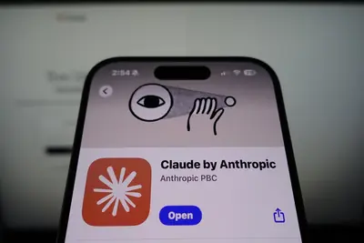
- 科技新報 TechNews Anthropic 半年封 1,140 萬帳號，11 月新規生效恐再掀封號潮
anthropic
不服判决：Anthropic 硬刚美国政府 AI“供应链风险”认定
IT之家 10 月 14 日消息，据彭博社报道，Anthropic 公司敦促华盛顿联邦上诉法院重新审议此前的一项判决，该判决维持了特朗普政府将这家人工智能企业认定为危害美国国家安全供应链风险主体的决定。 该公司于当地时间周二申请由上诉法院全体法官，复核一个三人法官小组在 9 月 25 日以 2 比 1 票数作出的裁决。Anthropic 主张，多数意见对法律作出了错误解读，允许美国国防部“在没有任何预先认定流程的情况下采取行动，而且已有明确证据表明，这项认定是对 Anthropic 就人工智能安全公开发表言论的报复”。 Anthropic 与政府之间的这

wherecerebrasfuture
Cerebras CEO says we’re nearing a future where everyone has a personal AI assistant at home
Cerebras CEO Andrew Feldman predicts a future where personal AI assistants become as commonplace as household appliances, running partly on local devices and partly in the cloud.
redesigningsourcecontrol
Redesigning source control at Anthropic
Redesigning source control at Anthropic Interesting piece from Anthropic describing why and how they built their own custom alternative to Git, based on the dramatic increase in rate of changes to their code after the past six months. In May 2026, Anthropic averaged around 2,500
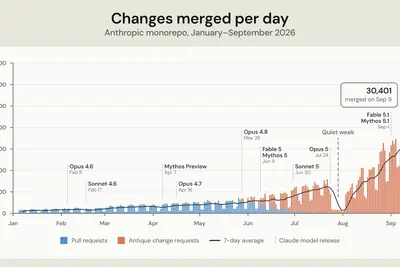
- Simon Willison Redesigning source control at Anthropic
industrialtasksfactory
Industrial Next wants factory robots to switch tasks in minutes, not weeks
Industrial Next helps manufacturers automate complex, delicate tasks that have traditionally required human labor.
fbi
在高管会议室偷偷安装录音设备，OpenAI 一沙特籍工程师被 FBI 逮捕
IT之家 10 月 14 日消息，据路透社报道，美国司法部当地时间周二表示，美国联邦探员逮捕了一名任职于 OpenAI 的沙特籍工程师，指控他在这家人工智能企业的高管会议室安装隐蔽录音设备。 美国司法部在声明中称，35 岁的阿卜杜勒拉赫曼 · 阿尔福赞（Abdulrahman Alfozan）自 2025 年 7 月起担任 OpenAI 工程师。 美国司法部介绍，9 月 30 日，OpenAI 在其旧金山一处办公楼的高管会议室里，发现一台电视后方 USB 接口上插着该录音设备。 美国联邦调查局的诉状显示，这个 U 盘大小的设备带有麦克风，还可外接摄像头，

doomsdaywarningscerebras
Cerebras CEO pushes back on AI doomsday warnings
Cerebras CEO Andrew Feldman has a message for AI leaders spreading doomsday warnings: Maybe stop talking? At TechCrunch Disrupt, he argued that the industry's focus on AI's risks is drowning out its potential benefits.
- TechCrunch AI Cerebras CEO pushes back on AI doomsday warnings
judgeordershiring
Judge orders OpenAI to turn over hiring records in Apple trade secrets case
A federal judge ruled that Apple can access OpenAI's interview materials involving former Apple employees, as well as private messages and testimony from key figures in the case.
shopifycatalogagents
Shopify opens its catalog up to more AI agents
More AI agents will soon be able to browse and purchase from Shopify listings, marking an expansion of the company's agentic commerce ambitions. Shopify announced Tuesday it will let shoppers configure their AI agents to purchase products on their behalf, giving more agents acces
- The Verge AI Shopify opens its catalog up to more AI agents
britishlawmakersregulate
OpenAI and Anthropic Tell British Lawmakers: Regulate Us
AI leaders joined whistleblowers and security leaders at a sweeping parliamentary session, while a few hundred meters away Britain’s spy chief warned AI could be used to create new bioweapons.
embracingchaosports
Xbox is officially embracing the chaos of AI-powered game ports
Retro gaming is going through a wild time at the moment, thanks to decompilations and recompilations that are letting gamers port classic titles to new devices, or merge code from two different games into a single new experience. Microsoft has witnessed skateboarding being modded
floxawaybuilding
Flox Intelligence is building AI to keep wildlife away from trains, airports, and roads
Flox's edge devices can identify animals and use species-specific sounds to drive them away from critical infrastructure.
smarthomeapple
Apple’s smart home event: All 7 devices, prices, and release dates
Apple’s “Welcome Home” event featured all the new smart home hardware coming to the Apple lineup.
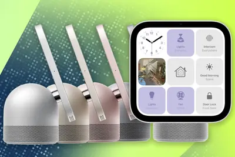
dlssgeforcertx
英伟达 DLSS 5 最新模型 10 月 16 日推送：性能相比 9 月翻倍，4K 显存占用降低 20%
IT之家 10 月 13 日消息，英伟达官方刚刚宣布，DLSS 5 的 3D 引导神经渲染模型将在本周迎来重大性能更新，新的模型将于 10 月 16 日正式推送。 英伟达表示，通过系统性优化处理流程和改进神经网络模型，新版本的运行性能将提升至 9 月首发版本的 2 倍，同时将 4K 游戏场景下的显存占用降低 20%，并保持相近的画面保真度。与 3 月首次技术演示时的性能相比，DLSS 5 累计性能提升达到 10 倍。 根据英伟达官方公告，此次更新将模型规模缩减 24%，参数量降至约 1.18 亿。新模型首先应用于《NBA 2K27》，支持 GeForce
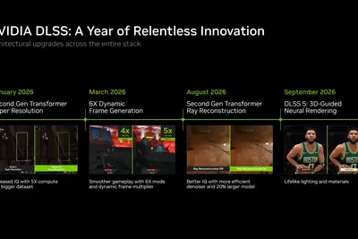